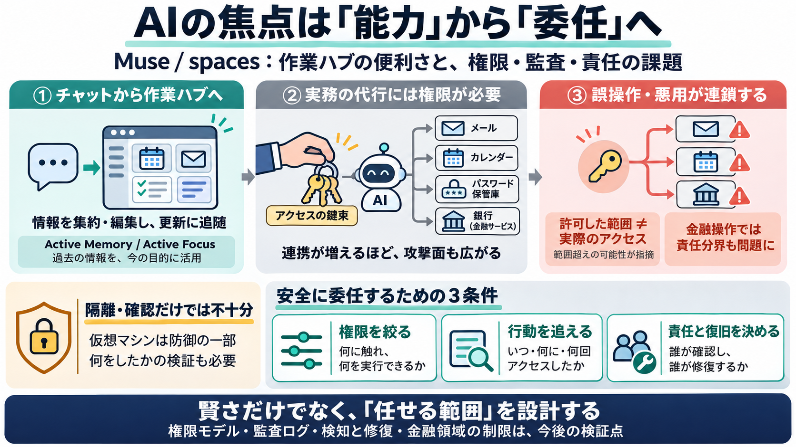

Meta's former security chief Alex Stamos says giving Muse AI your passwords and finances is "totally insane"
On the company's earnings call in October, Dimon said, "If people are using them, they should understand the risk. There…

On the company's earnings call in October, Dimon said, "If people are using them, they should understand the risk. There…
Meta spent the better part of two years talking about a future where every person on Earth has a capable AI agent workin…
Meta, like its Big Tech peers, is pouring billions into its AI build-out. During its most recent quarter, the company sa…
# Alex Stamos [...] Description: Alex Stamos is the Chief Security Officer of Corridor (corridor.dev), the leading start…
7. Insurance 1. Find Car Insurance 2. Types of Car Insurance 3. Car Insurance Discounts 4. Find…